Hannah's idea was the word LDGR written into an accounting ledger, as if it were an entry. This page shows every round it took to get from that idea to what now opens on the clinic's computer. Each step lists what we tried, what Jorrel said about it, and what we kept. The pictures are the actual drafts.
33 fonts on the first specimen15 cursive scripts sourced6 first-round boards3 colour schemes for the paper5 revisions of the header strip alone431 draft files kept
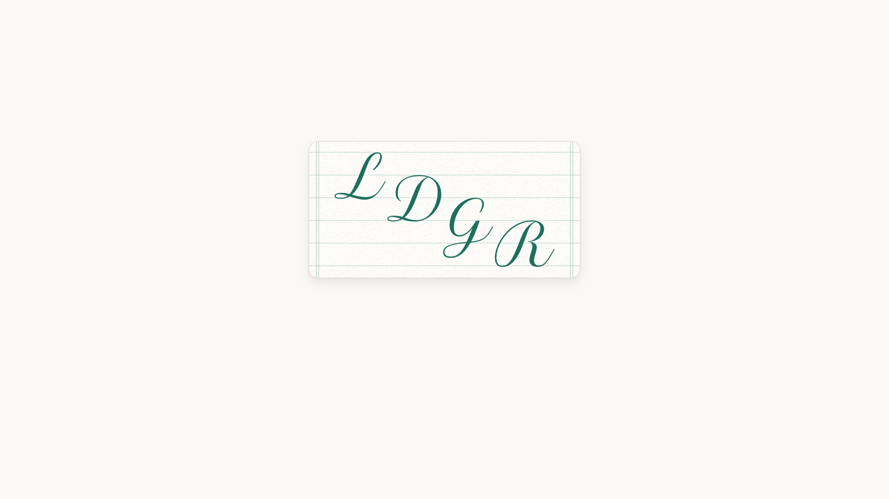
Where it ended: the start banner, "LDGR" in Petit Formal Script cascading down a patch of ledger paper.
1
The brief
Write LDGR into a ledger
There were four pieces to design, all in one display font that the form itself would never use:
the full logo;
a start screen showing it with "powered by SolRegia";
a closing screen;
the small image at the top left of the form.
The letters were to fall between the ledger lines, as an entry would.
2
Round 0 · fonts
33 fonts on a strip of ledger paper
Every candidate font wrote "LDGR" on the same green ruled strip with a red margin, all at the same height, so they could be compared fairly. Only fonts we could legally use in a logo made the shortlist.
The whole specimen board, all 33 fonts, each labelled with its name and licence. Rows 1–9 are open-licence; the rest come with Windows or Office.
Take two open-licence serifs into the first round: Source Serif 4 and Piazzolla.
3
Round 1 · concepts
Three ways to put a word in a ledger
The ledger should scale with the size of the LDGR text to actually act as a backdrop and the dimensions of the letters should fit aesthetically into the lines. Think the ratio of letters in the Pacioli font selectively highlighted by the lines in the ledger background.Jorrel, mid-round
Luca Pacioli, the father of double-entry bookkeeping, also drew Roman capitals on a strict grid. So the ruling was set from the letters' own measurements, with rules landing exactly on the baseline, the cap height and the waist of the R. Each idea was drawn in both fonts: the word as one entry, the letters cascading down the rows, and each letter in its own square cell.
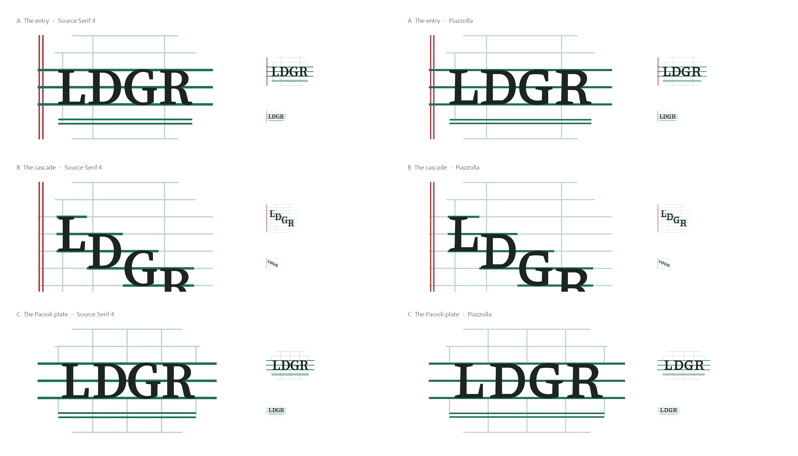
The entry, the cascade and the Pacioli plate, each in Source Serif 4 and in Piazzolla.
Source Serif 4, and drop the cascade. But the middle rule read as a line crossed through the word, which in a ledger means a voided entry, and the rules were far too heavy.
4
Round 2 · hairlines
Lighter rules, and nothing crossing the letters
The rules became hairlines. The middle rule was cut away around the letters, and three ways of handling the ruling were drawn.
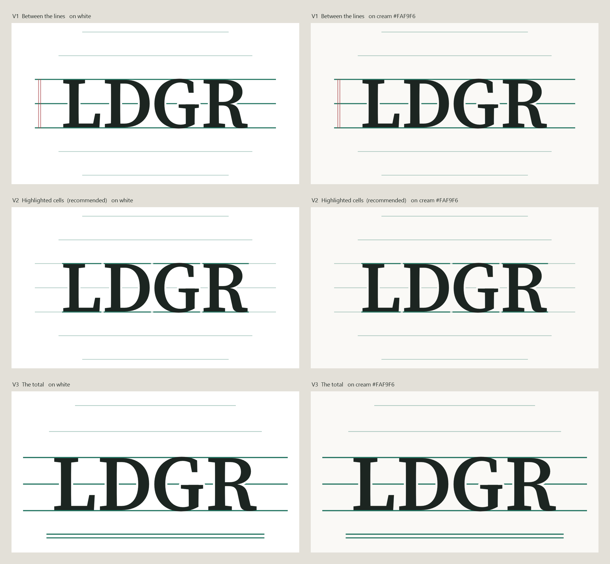
V1 "between the lines", V2 "highlighted cells", V3 "the total", each on white and on the form's cream.
V2, with a green segment above and below each letter.
5
First production set
A start screen, a closing screen and header options
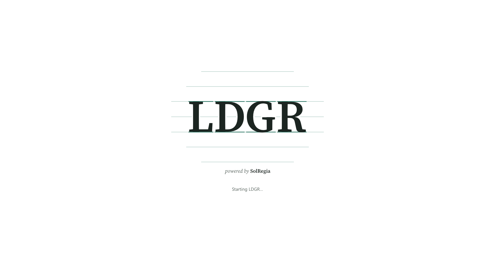
The serif start screen, with "powered by SolRegia".
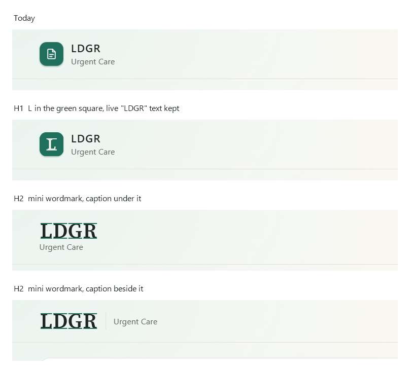
Header options against the form's old header.
When I said selectively I just meant that based on the typographical proportions of the Pacioli font, the horizontal lines of the ledger would only match up with some letters' dimensions.Jorrel
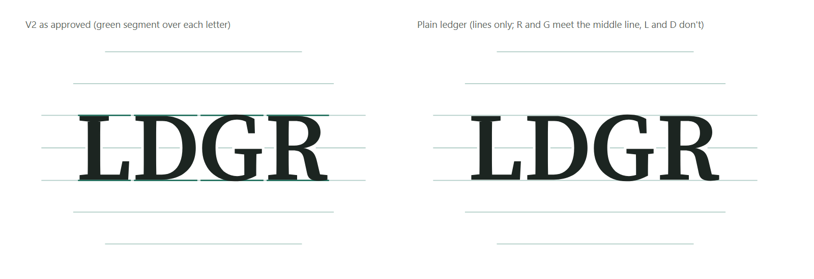
So the green segments went. The lines simply meet some letters (the R's waist, the G's bar) and miss others.
Plain ledger lines. For the header, a mini wordmark with "Urgent Care" beside it, and the ledger lines must still run through the word.
6
The turning point
"A bit too plain and vanilla"
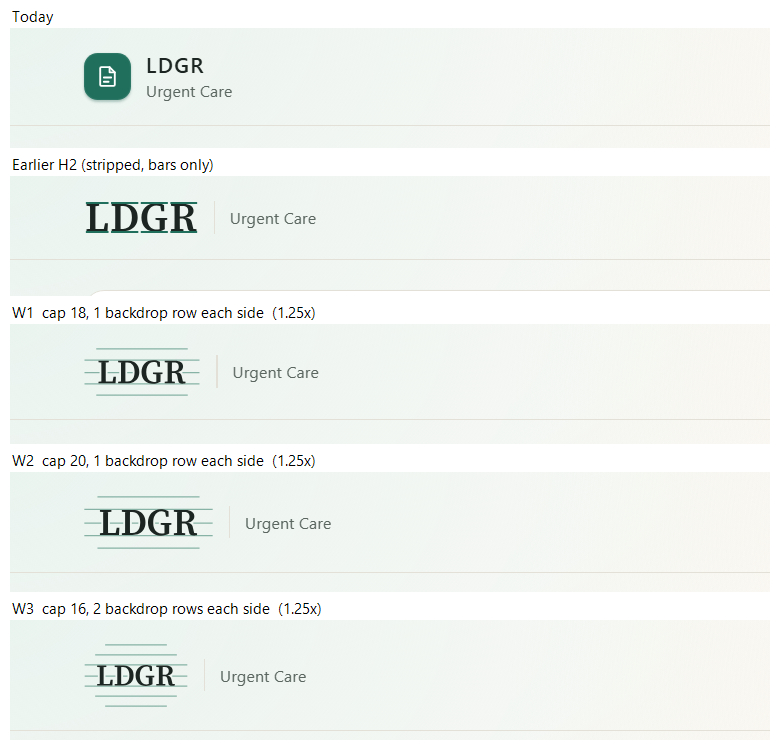
Three serif header wordmarks with ledger lines, shown in the real form header.
I like W1 but don't you find the font a bit too plain and vanilla? I'd like some cursive. It fits the analogue backdrop better. Also it should have the 'book' colour … the backdrop should be slightly textured to give it that book feel and the font could be smaller, the lines should be uniform in length, and it can have the vertical lines that make it resemble an actual ledger book.Jorrel, with a photo of a real two-page ledger
Everything serif was set aside.
7
Paper
A patch of real ledger paper
The paper took the ivory colour of the reference photo and a generated grain. It got rules of equal length, a heading band, a margin double rule and money columns.
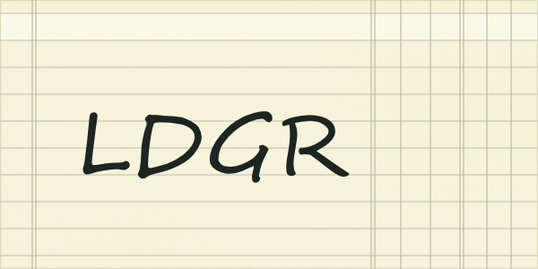
The first paper patch, with a placeholder word for scale.
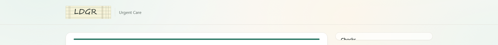
The same patch at header size.
Cut the vertical height so it matches the LDGR more closely and there only really need to be the two sets of vertical lines, i.e. the ends should be symmetrical. That way the letters can cascade diagonally downwards instead of being plainly horizontal.Jorrel
The cascade from round 1 came back. Then two more notes followed:
The colour of the paper background should mesh well with the background of the actual LDGR application.Jorrel
Perhaps keeping the paper texture but have the background and letter colours match the colour scheme. Green and white letters on off-white paper.Jorrel
8
Cursive
Fifteen scripts, eight on the shortlist
The design-reference library had no script fonts, so 15 open-licence pen scripts were found and licence-checked, and the ones with readable capitals were kept.
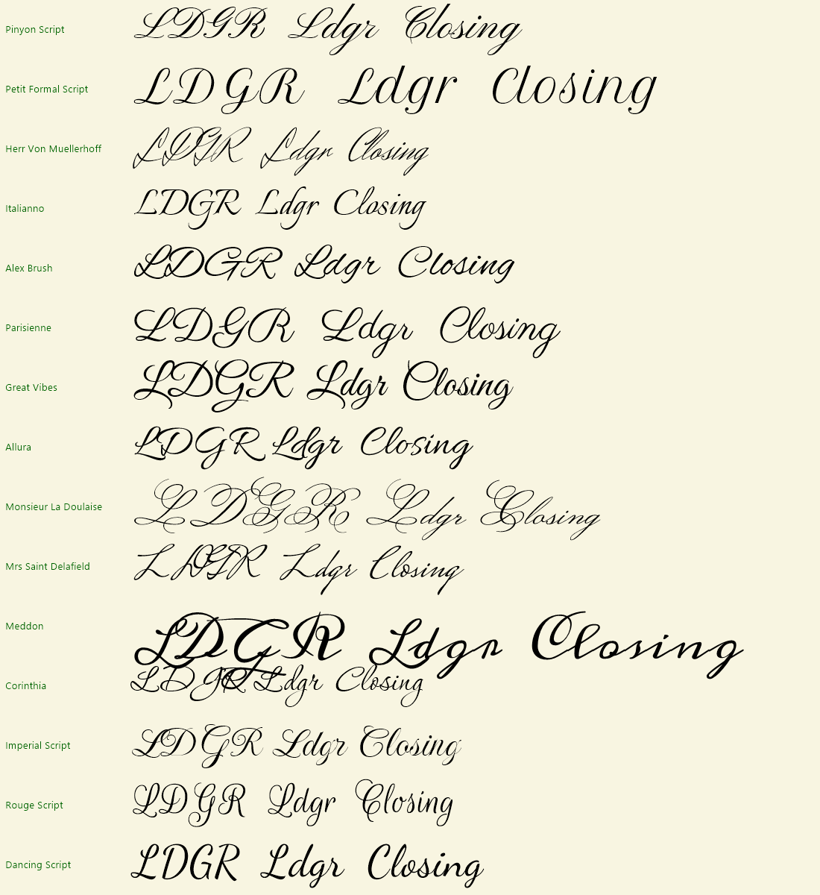
"LDGR · Ldgr · Closing" in all fifteen.
9
Cascade and colour
Every script cascading down the paper
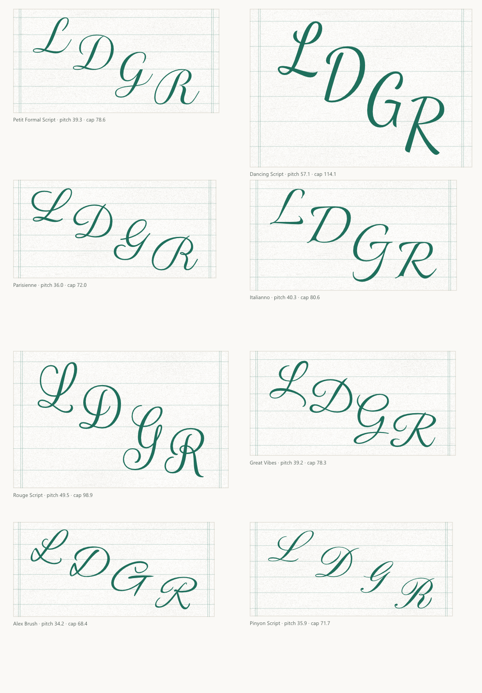
The eight shortlisted scripts, green on off-white.
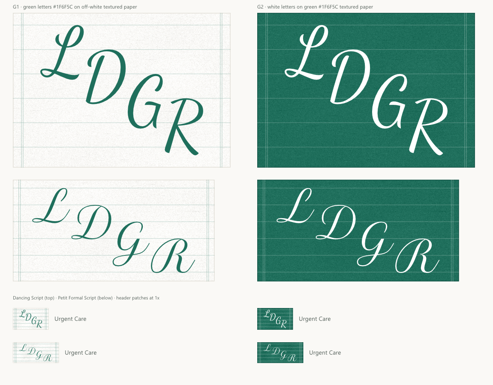
Green on off-white against white on green, at logo size and at header size.
Petit Formal Script, green on off-white, rounded corners. No "powered by SolRegia" on the start screen. The icon is just the L. "Urgent Care" goes white on green beside the LDGR patch.
10
Start and close
The start and closing screens
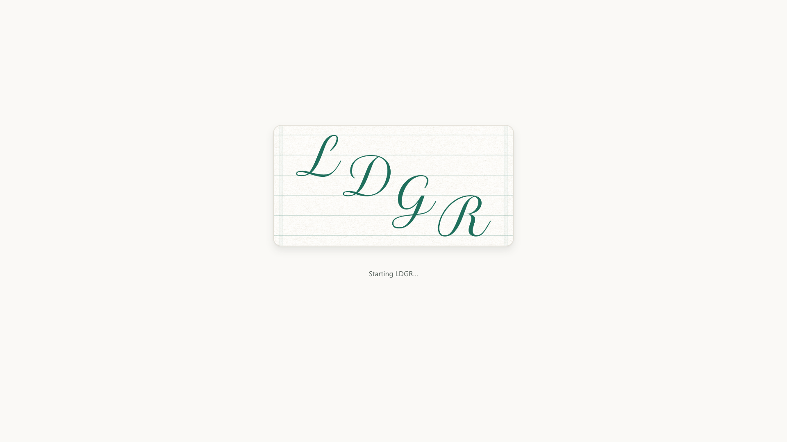
First version, with "Starting LDGR…" under the banner.
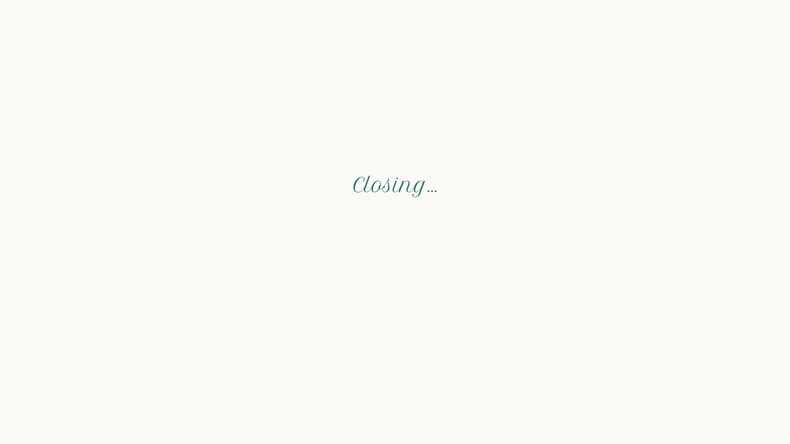
The closing screen.
Starting LDGR actually isn't necessary anymore. I think that the banner with the name of the program popping up after they double click should have them understand the program is loading up, lol.Jorrel
The banner only. A sentence appears under it only when a start is slow or fails.
11
The header pair
LDGR and Urgent Care, side by side
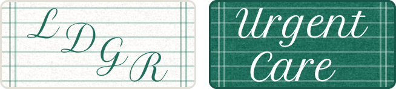
First pair: "Urgent Care" outweighed the program name.
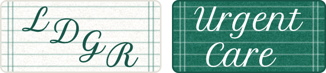
Weights evened out.
Urgent Care should be written in a smaller size for sure … don't want it to detract from the program name itself. Also try making it so there's no space separating the two, i.e. the position of the vertical lines should essentially overlap.Jorrel
12
Five more passes
One strip, measured to the letter
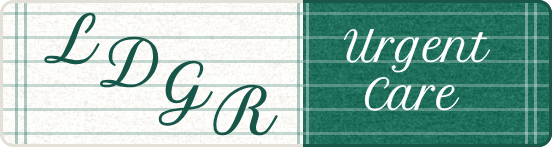
Joined into one strip that shares a double rule: green on the white side, white on the green side.
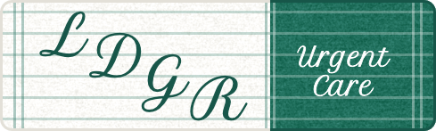
The final strip.
Top of the capital U should be maybe under the top 2/7ths of the D in LDGR and the bottoms of the Care should end about 4/9ths of the way down from the top of the R.Jorrel
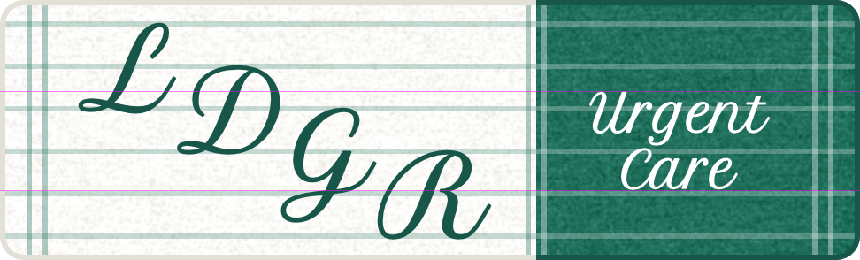
Measured exactly, with the guide lines drawn across both halves. Then "Urgent Care" grew 2.75 %.Contrast against the page was too strong. 85 % opacity was tried, and 94.5 % was kept.
13
The icon
Just the L
The L sits between the two double rules on the same paper, with rounded corners to match Windows 11. Each of the ten sizes is drawn separately, and below 48 px the texture is dropped and the L made heavier, so it still reads at 16 px.
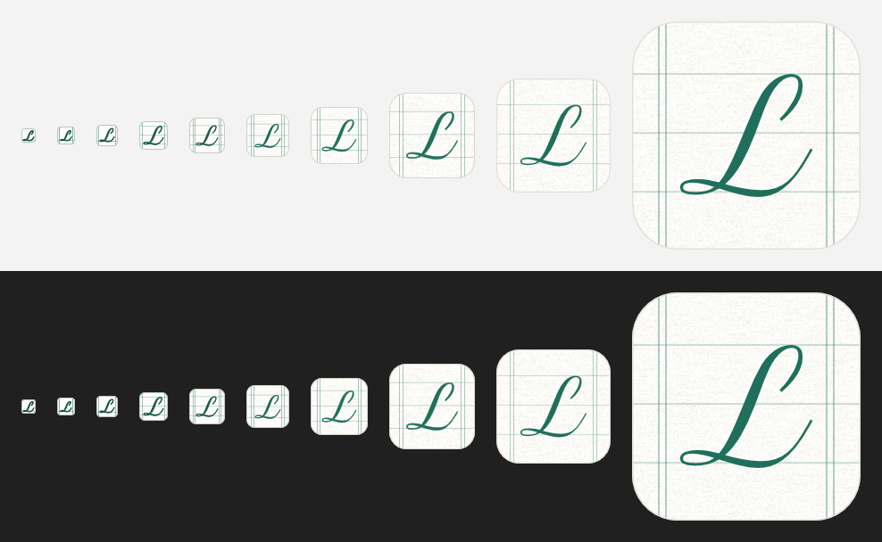
Every size from 16 to 256 px, on a light and a dark taskbar.
Taskbar icon looks great.Jorrel
14
In the real app
Wired into LDGR.exe
These are screenshots of the real program, run from a scratch copy. The start banner now floats on its own in the middle of the desktop until the form is ready, like a classic splash screen.
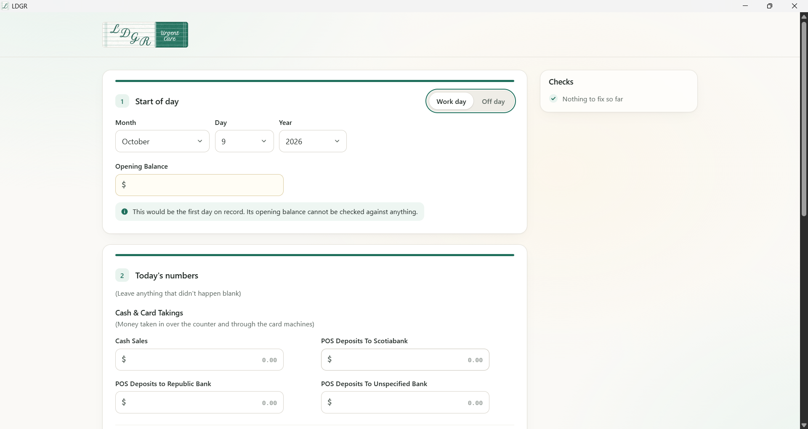
The form, with the header strip at the top left.
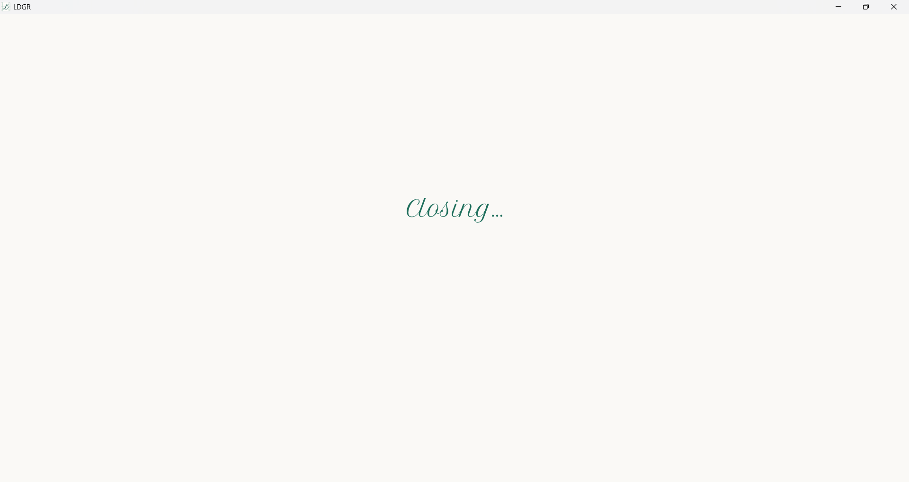
Closing.
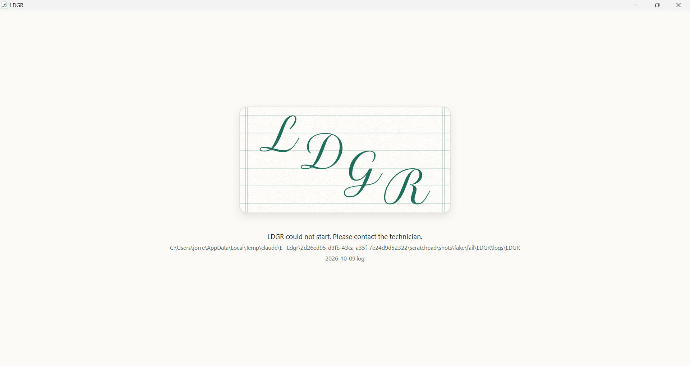
What staff see if it ever fails to start (a deliberately broken test copy).